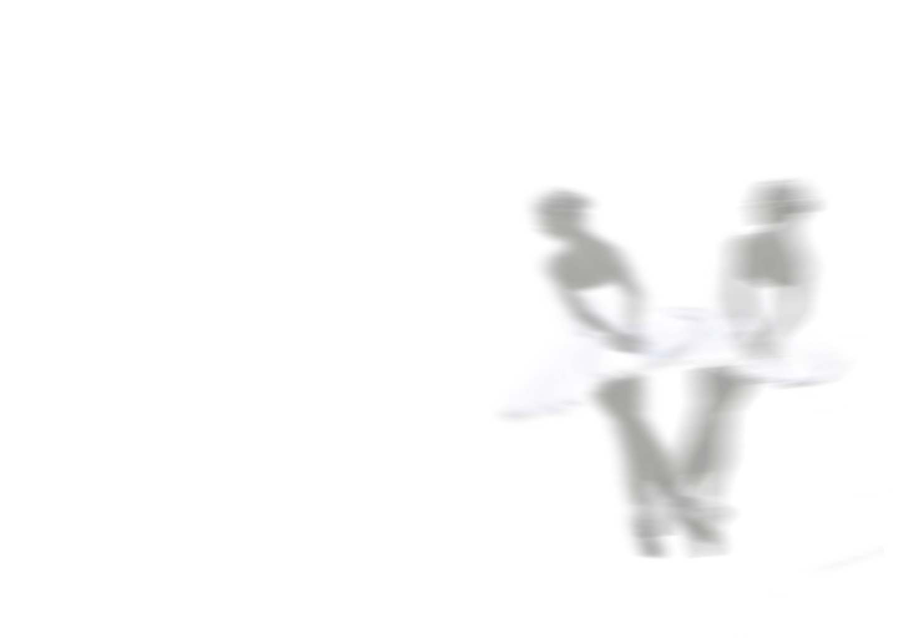
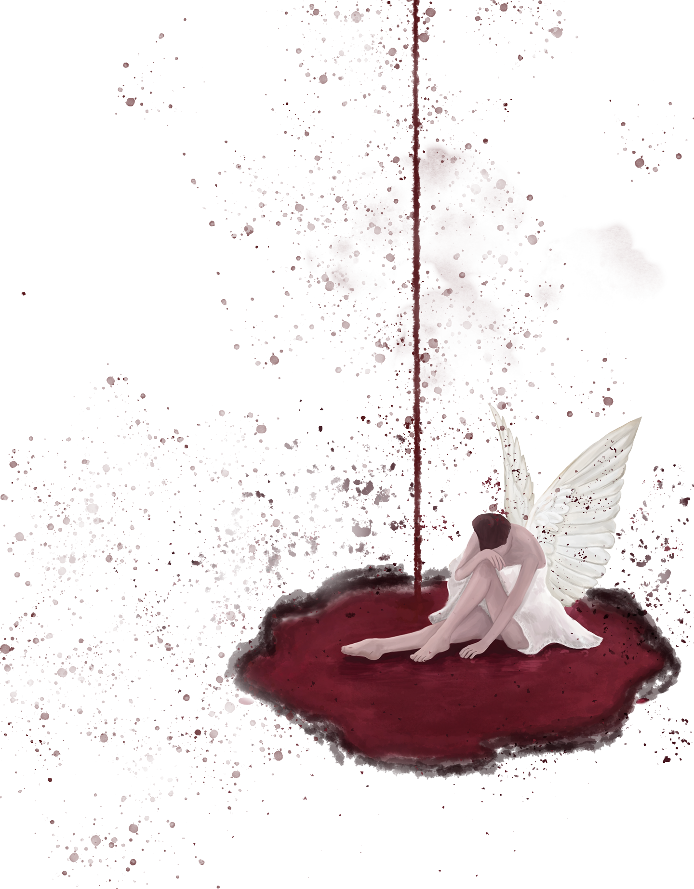
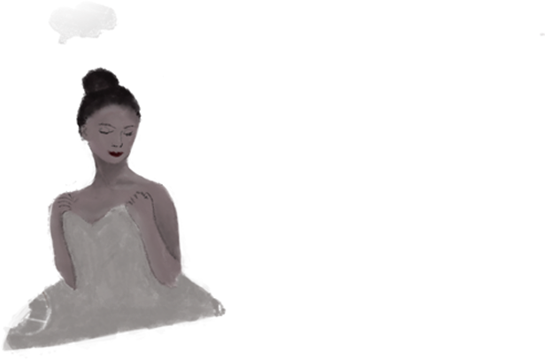
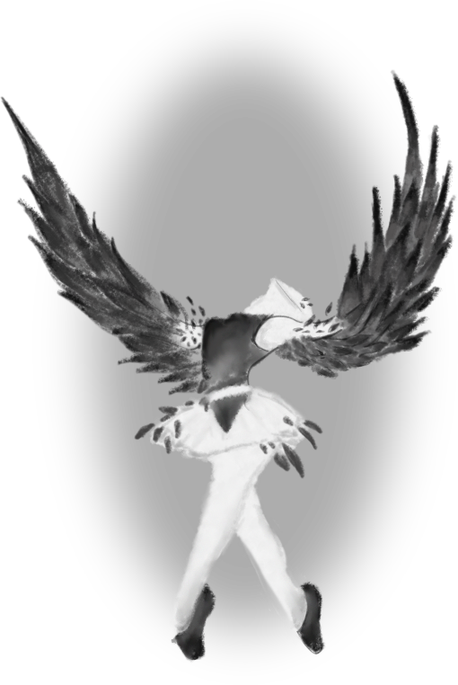
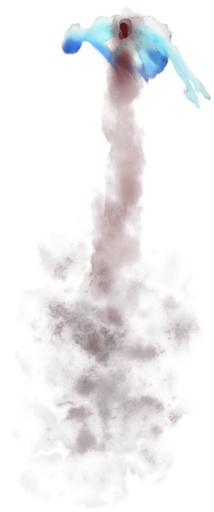

based on "Black Swan" movie.



Each dawn began on splintered floor
Her bleeding toes in silent strain.
She chased perfection evermore
Through discipline, through hidden pain.

But art demands a darker wing,
A fire the beneath a quiet skin.

The "Black Swan" lives in everthing,
You only need to "let her in"
From the mirrors whispered in the night,
A shadow stirred from somewhere deep inside.
Desire awoke, a sudden burning light,
Another self. began to rise.
Through nights of bars and burning wine
Through wandering hands in winding maze.
She crossed the borders once confined.
To find herself in wind, lost haze.

The opening night unveils in silience,
As the White Swan dissolves in the light.
The Black Swan spreads its wings in radience
To burn with perfection through the night

The audience breaks into thunder
Yet crimson stains her fragile gown.
She smiles beneath the blinding lights,
While something in her settles down
The End.